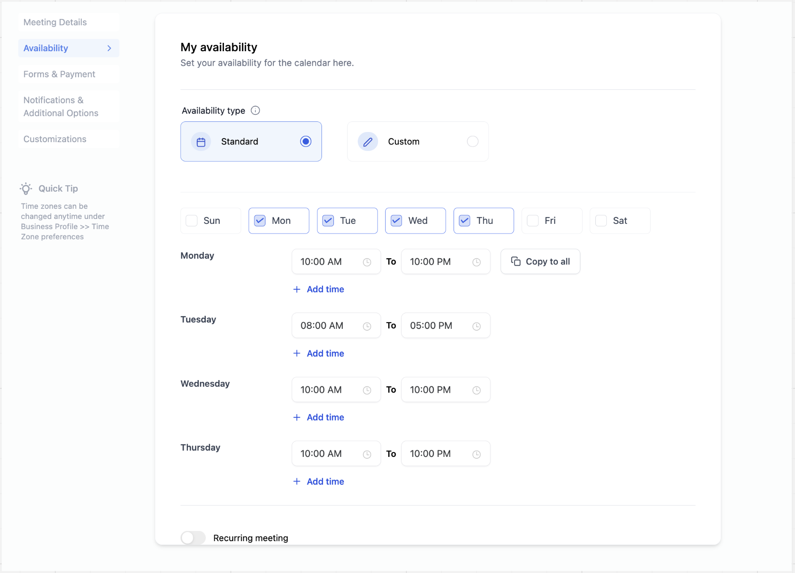
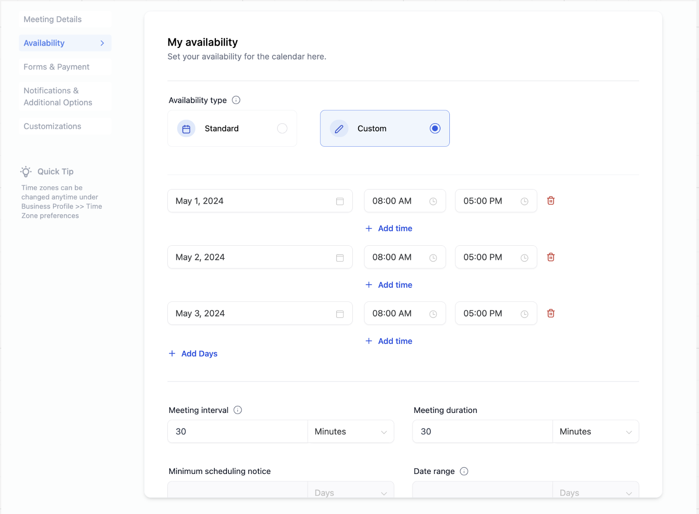
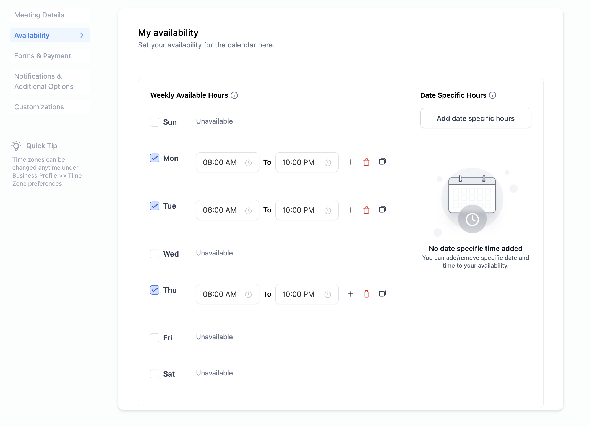
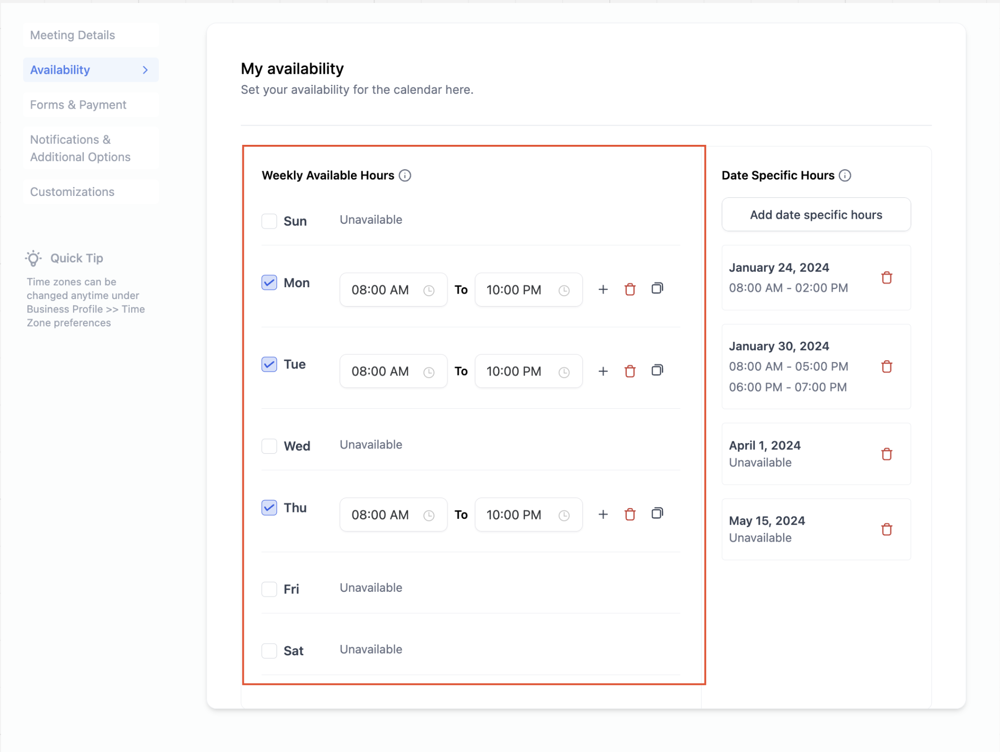
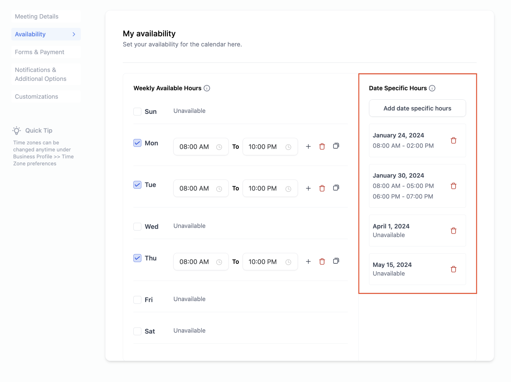
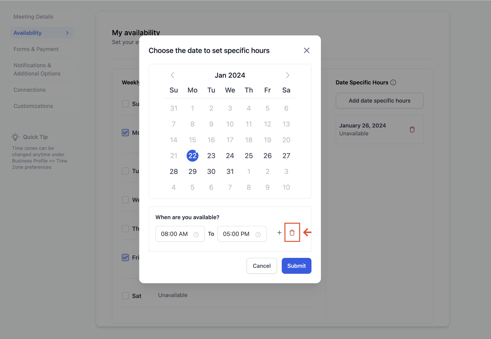
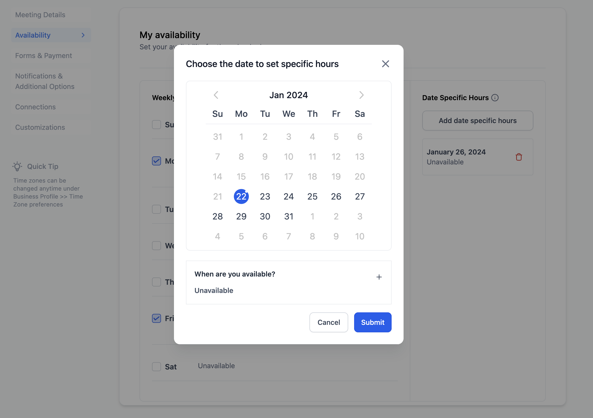

In This Article
- Overview
- Weekly Working Hours (formerly Standard Availability)
- Date-Specific Hours (formerly Custom Availability)
- Important Points to Note
Overview
Previously, we had two distinct availability configurations: Standard Availability and Custom Availability. With recent updates, these have evolved into Weekly Working Hours and Date-Specific Hours - two types of availability settings to cater to your diverse needs.
In the past, the availability settings operated independently of each other. Now, you can configure both your weekly working hours and date-specific hours concurrently, providing a more dynamic and adaptable scheduling experience. It allows you to maintain a consistent weekly schedule while accommodating unique circumstances on specific dates.
Understanding the distinction between these two can help you effectively manage your calendar and ensure that it aligns with your real-time availability.
PREVIOUSLY VS NOW


AT PRESENT

Weekly Working Hours (formerly Standard Availability)
Weekly working hours represent your regular availability on a recurring basis. This is useful for setting up your default schedule that repeats week after week.
For instance, if you're consistently available every Monday, Tuesday, and Thursday from 8 AM to 10 PM, you can configure these hours as your weekly working hours. The system will then automatically apply this schedule to those days and times every week.

Date-Specific Hours (formerly Custom Availability)
Date specific hours allow you to customize your availability or unavailability for specific dates. You can add specific dates and define hours applicable only to those dates.
This feature is particularly helpful for handling exceptional circumstances, holidays, or personal commitments. Here are a few examples to illustrate its usage:
Example 1: Holidays
You can mark upcoming holidays such as Easter, Christmas, or bank holidays as unavailable. During these specific dates, your calendar will reflect that you are not available, ensuring accurate scheduling.
Example 2: Personal Commitments
In cases where you have prior personal commitments that deviate from your regular schedule, you can easily adjust your availability for those specific dates. For instance, if you have a doctor's appointment on 10th February, 2024 from 12 PM to 3 PM, you can mark yourself as unavailable during that time without the need to create a blocked slot.
Example 3: Extended Availability
For special occasions like a long weekend where you want to extend your working hours for a limited duration, you can use date specific hours to modify your availability only for those specific days.

Note: To mark your unavailability, simply select the date and, under the timeslot click on the delete icon.


Important Points to Note
- Weekly Hours vs. Date Specific Hours: Weekly hours represent your standard, recurring schedule, while date specific hours allow for specific adjustments on selected dates.
- Hierarchy of Hours: Date-Specific Hours will always take precedence over the Weekly Working Hours. In other words, if you have set specific hours for a particular date, those hours will override the default weekly working hours for that day.
- Marking Availability/Unavailability: Date specific hours provide the flexibility to mark both your availability and unavailability for specific dates, giving you complete control over your calendar.
By leveraging both weekly working hours and date specific hours, you can create a flexible and accurate representation of your availability, ensuring a seamless scheduling experience for both you and those interacting with your calendar.